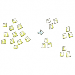

KJ Method
KJ法
摘要 （Abstract）
KJ法，其原理為結合腦力激盪、分類法、歸納法。將設計中的不同想法、意見和經驗完全搜集起來，再將所搜集的事實透過歸類合併和整理，發展出具知識架構、邏輯的合併圖，從圖中整理出問題思路，幫助創意思考的進行。
定義（Definition）
KJ法又名親和圖法，是日本人類學家川喜田二郎（Kawakita Jiro）所發明，而KJ是他的英文姓名縮寫。我們時常為了解決問題、情報蒐集或創意發想的過程需要進行腦力激盪，來思考內容以及發表意見，而一個團隊在進行腦力激盪的過程，會出現許多種不同的意見想法與經驗，將這些意見與想法用便利貼或紙片記錄下來，再將這些內容依其之間的相互關係給予分類歸納以及分類整理，進而找出解決問題的一種做法。而對於急於求成的問題則不能使用KJ法。
通常使用在對於難以整理出頭緒、問題複雜、牽涉部門廣、意見眾多且該問題必須解決的情況。腦力激盪後記錄並進行歸納整理、成員間相互啟發，來達成共同的目標以及制訂新產品的發展方針、目標和計劃。
與卡片分類法相似，都是將訊息寫在卡片或便利貼上再進行分類整理，釐清事情並整理出解決方法，但其差異處在於KJ法是解決大方面的問題，且更多的是在尋找問題所在，而卡片分類法則是一個明確的目標來進行討論。
步驟（Procedure）
Step1. 決定問題的主題
發現大面向的問題，再決定具體的問題，才能深入找到解決方法。
Step2. 進行腦力激盪的討論
有利於打破現有思考的框架，進行更創造性與跳脫性思維。
Step3. 關鍵字紙片製作
將討論的內容資訊答案以「具有關鍵意義且清楚具象的字句」記錄下來，而且每一張紙片只寫一個答案，讓資訊切割並且單元化才能讓討論者們清楚明瞭。搜集的資料應避免抽象含糊，盡量以具體的描述想法。
Step4. 進行編組
將紙片全部攤開，並仔細閱讀每一張紙片，把屬性類別相同的紙片放在一起加以分成小組，若出現單張無法歸類的紙片，則原封不動並視為一個小組，再將小組與小組之間的同性質做出歸納。
Step5. 替各組別命名
將歸納好的群組進行命名，並寫在一張新的紙片上，放於歸納好的群組之最上方。
Step6. 分類後再檢視
將分類好的類別進行檢查，檢視類別中的小組分類是否有重複或錯誤以及缺失，再進行新增或淘汰以及修正；最後類別以不超過十組為原則。分群後須注意群組是否太大或太小，太大表示內聚力太低，需拆解重新找出差異性，太小則需要更多的觀察、點子、想法。
Step7. 找出重要類別與排序
分類好之後找出最重要的類別，並且排列類別內容的重要程度。
Step8.規劃流程
以最關鍵的類別為中心，將其他次要類別用箭頭符號、虛線以及畫圈進行連結，整理出各個類別之間的關聯性與相互之間的影響，才能規劃出解決先後順序的流程。
Step9. 構思方案
提出建議方案、決策，並執行，後續定期及不定期追蹤，直到問題解決為止。
案例（Case）
案例一 艾比湖流域生態環境綜合治理研究
調查對象是位於新疆北部的艾比湖，湖水面積約680平方公里，流域面積50621平方公里，是新疆最大的鹹水湖。該流域是新疆天山北坡經濟帶的重要組成部分，近年來經濟發展較快，人口和農業用快速增加，導致入湖水量銳減。由於乾涸裸露的湖底多是鹽等細微沉積物，加上位於阿拉山口主風道，致使它成西北地區最大的風沙策源地。
為了整合不同研究領域，以便得到對於整個系統的綜合集成研究成果，同時促進政策制定者、管理者和研究者之間的交流決策，此研究便採用了KJ法。將針對生態學、水土保持與荒漠化防治、土地資源管理、地理信息工程等不同專業的30位研究人員和專家的意見進行整理，其意見經過初步整理後形成59張卡片，最後編組階段將59張卡片編成5個大組：生態環境惡化的自然原因、人為驅動力、惡化的表現、治理措施、治理目標。
KJ法的一大優點就在於可以將來自各種專家學者、規劃決策管理人員、普通民眾等不同身份階層、不同專業領域的意見進行整合，並且可以幫助研究者從一大堆紛繁無序的信息中整理出有序化的系統結構。特別是在規劃設計的公眾參與越來越廣泛深入的現實背景中，有著良好的應用前景。
根據上述的案例描述，我們可以發現：生態環境是一個包含多面向的問題，需要不同領域方針去解決，然而KJ法就是將各種不同領域的內容進行分類與整合，找出最出最好的解決流程。
案例二 企業對於業績下滑問題探討
Step1.
某企業發現近期業績嚴重下滑，工廠流失大量合作商、客戶，造成嚴重損失種種問題。
Step2.
招集個部門主管及員工，分組進行腦力激當討論，收集所有相關資料。
Step3.
針對公司業績下滑探討問題所在，將所有相關資料、想法寫在便利貼上，一張便利貼紙寫一個內容。
Step4.
將便利貼進行分組，將薪水低、人員流動率高、上班時間太長、請假人數多等，歸納成一組。進行統整後歸納出六個大組：品質管理、停工、原料管理、工作效率、生產計畫不周、外部因素。
Step5.
將薪水低、人員流動率高、上班時間太長、請假人數多的群組命名為工作效率低。
Step6.
將分類好的群組再次審核，確認是否有錯誤需修改、更動。
Step7.
認為品質不合的群組最為重要將他排在最中心，其次是工作效率低、停工、生產計畫不周。
Step8.
停工因素（機械故障、能源缺乏）影響工作效率（人員疲勞，上班時間加長等），將群組與群組間的互相關係、影響編排標示出來。
Step9.
歸納出問題參與、負責的部門，進行各問題小型研討會，提出解決方案，並根據計畫執行，直到問題解決完畢。
參考資料（Reference）
kojenchieh。KJ 親和圖法二三事。
資料整理：2018 周文穎、2019 李海若、2021林嘉佳
總編輯：羅歆慈
編輯與排版：李明容